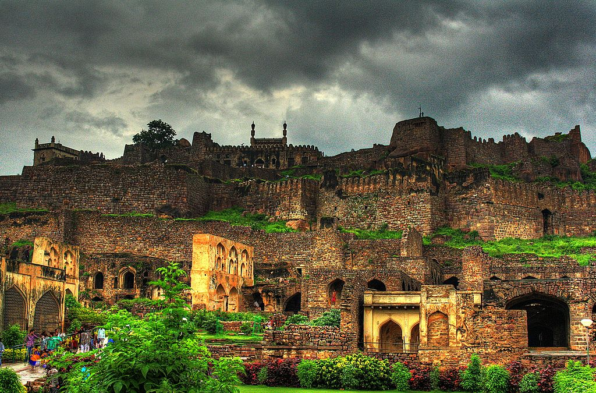

Charminar
Charminar, meaning "Four Minarets," is an iconic monument and mosque located in the heart of Hyderabad. Built in 1591 by Sultan Muhammad Quli Qutb Shah, it is a symbol of the city's rich history and architectural grandeur. Visitors can climb to the top of the minarets for panoramic views of Hyderabad's bustling streets and markets.
Golconda Fort
Golconda Fort, dating back to the 13th century, is a majestic citadel situated on a granite hilltop. It served as the capital of the medieval Golconda Sultanate and later became a prominent fortress of the Qutb Shahi dynasty. The fort complex includes impressive gateways, royal palaces, mosques, and the famous Fateh Darwaza (Victory Gate).

Ramoji Film City
Ramoji Film City is the world's largest integrated film studio complex, spanning over 2,000 acres. It offers visitors a glimpse into the glitz and glamour of the Indian film industry. Explore themed sets, live performances, film screenings, and behind-the-scenes tours to experience the magic of cinema firsthand.